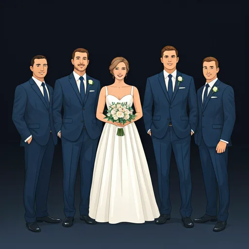

Es gibt diesen einen Moment am Tag, an dem die Welt in Gold getaucht ist. Wenn das Sonnenlicht tief steht, weich wird und alles — wirklich alles — schöner aussieht. In der Fotografie nennen wir ihn die Golden Hour. In über 13 Jahren als Hochzeitsfotografin in Kassel habe ich bei mehr als 200 Hochzeiten erlebt, wie dieses Licht Bilder verwandelt: von schön zu unvergesslich. In diesem Artikel erkläre ich euch, warum die goldene Stunde so besonders ist, wann genau sie stattfindet und wie ihr als Brautpaar das Beste daraus machen könnt.
Warum das Licht entscheidend ist
Licht ist die Seele jeder Fotografie — und kein Licht ist schöner als das der Golden Hour. In dieser kurzen Phase kurz vor Sonnenuntergang steht die Sonne so tief, dass ihr Licht einen langen Weg durch die Atmosphäre zurücklegt. Das Ergebnis: ein warmer, goldener Ton, der Hauttöne zum Leuchten bringt und harte Schatten fast vollständig verschwinden lässt.
Anders als das grelle Mittagslicht, das unvorteilhafte Schatten unter den Augen und am Kinn wirft, umschmeichelt das Golden-Hour-Licht eure Gesichter sanft von der Seite. Eure Haut wirkt natürlich warm, eure Augen leuchten, und selbst der Hintergrund — ob Bergpark-Wiese oder Fulda-Ufer — bekommt diesen samtigen, fast schon malerischen Schimmer.
Für mich als Fotografin bedeutet das: Ich brauche kaum künstliches Licht, keine komplizierte Technik. Die Natur liefert mir das perfekte Studio — kostenlos und in einer Qualität, die kein Blitzgerät der Welt nachahmen kann.

Goldenes Licht — der Schlüssel
zu magischen Bildern

Beginnt etwa eine Stunde
vor Sonnenuntergang
Der perfekte Zeitpunkt
Die Golden Hour beginnt ungefähr 60 bis 90 Minuten vor Sonnenuntergang. Im Hochsommer in Kassel kann das bedeuten: Euer Paar-Shooting startet um 19:30 Uhr, wenn die Sonne langsam tiefer sinkt und das Licht von klar zu golden wechselt. Im Frühling oder Herbst verschiebt sich das Fenster — manchmal auf 17:00 oder 18:00 Uhr.
Mein Geheimtipp: Nutzt nicht nur die Golden Hour selbst, sondern auch die 15 Minuten danach — den sogenannten „Afterglow". Wenn die Sonne gerade hinter dem Horizont verschwunden ist, bleibt ein weiches, diffuses Licht zurück, das dramatische Silhouetten und zarte Pastellfarben am Himmel erzeugt. Einige meiner emotionalsten Hochzeitsbilder sind in genau diesen Minuten entstanden.
Als eure Hochzeitsfotografin berechne ich den Sonnenuntergang für euer Datum auf die Minute genau und plane das Paar-Shooting entsprechend in eure Timeline ein. So verpasst ihr dieses magische Zeitfenster garantiert nicht — auch wenn die Reden etwas länger dauern als geplant.
„Plant euer Paar-Shooting 60–90 Minuten vor Sonnenuntergang ein. Ich empfehle, direkt nach der Vorspeise 15–20 Minuten einzuplanen, um nach draußen zu gehen. Sagt euren Gästen, dass ihr kurz verschwindet — die freuen sich auf die Bilder mindestens so sehr wie ihr!"
Die schönsten Golden-Hour-Locations in Kassel
Kassel bietet einige der schönsten Kulissen für Hochzeitsfotos bei Sonnenuntergang. Hier sind meine persönlichen Favoriten:
Bergpark Wilhelmshöhe — Die Weitblick-Wiesen unterhalb des Herkules bieten einen freien Horizont nach Westen. Das goldene Licht fällt ungehindert über die Parklandschaft — absolut traumhaft für Paarporträts.
Fulda-Auen — Das Wasser der Fulda reflektiert das warme Abendlicht und erzeugt einen fast unwirklichen goldenen Schimmer. Besonders im Bereich der Karlsaue entstehen hier Bilder, die an Monet erinnern.
Orangerie-Garten — Die symmetrischen Wege und historischen Gebäude bilden eine elegante Kulisse. Wenn das goldene Licht durch die alten Bäume fällt, hat dieser Ort etwas Zeitloses, fast Filmisches.
Tipps für das Brautpaar
Ihr müsst keine Models sein, um in der Golden Hour fantastisch auszusehen — das übernimmt das Licht für euch. Aber ein paar Dinge könnt ihr tun, damit die Bilder wirklich besonders werden:
Entspannt euch. Das klingt einfach, ist es aber oft nicht — nach stundenlangem Programm, Reden und Gratulationen. Atmet tief durch, nehmt euch bei der Hand und vergesst für 15 Minuten alles um euch herum. Die besten Bilder entstehen, wenn ihr euch nicht beobachtet fühlt, sondern einfach zusammen seid.
Vertraut dem Prozess. Ich werde euch sanft lenken — ein bisschen näher zusammen, den Blick hierhin, ein paar Schritte in dieses Licht. Aber die echten Momente kommen von euch: das Flüstern, das Lachen, die Umarmung, die einen Moment länger dauert als geplant.
Vermeidet die Mittagssonne. Falls euer Zeitplan Paarfotos auch tagsüber vorsieht, sucht schattige Plätze — unter Bäumen im Bergpark, in einem Torbogen oder im Gewächshaus. Das harte Mittagslicht ist der natürliche Feind schöner Porträts.
Lasst den Moment geschehen. Manche meiner schönsten Aufnahmen entstanden, als das Paar vergessen hat, dass ich da bin. Wenn ihr den Sonnenuntergang zusammen anschaut und einfach im Augenblick versinkt — dann drücke ich auf den Auslöser.

Entspannen und den
Moment genießen

Natalia Tschischik
Ich liebe es, echte Emotionen und das magische Licht des Sonnenuntergangs einzufangen. Als Hochzeitsfotografin ist es meine Leidenschaft, eure Liebe in zeitlosen, goldenen Momenten festzuhalten — natürlich, ehrlich und voller Wärme.